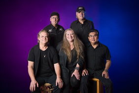

SONGLIST
Tailspin Song List
All About That Bass | Meghan Trainer |
All About Tonight | Blake Shelton |
All My Friends Say | Luke Bryan |
All Right Now | Free |
American Girl | Tom Petty |
Authority Song | John Mellencamp |
Beer In Mexico | Kenny Chesney |
Beer Money | Kip Moore |
Billie Jean | Michael Jackson |
Birthday | The Beatles |
Blame It On Your Heart | Patty Loveless |
Blue Ain't Color | Keith Urban |
Born To Be Wild | Steppenwolf |
Boot Scootin' Boogie | Brooks & Dunn |
Call Me The Breeze | Lynyrd Skynyrd |
Can't You See | Marshall Tucker Band |
Chicken Fried | Zac Brown Band |
Country Girl (Shake It For Me) | Luke Bryan |
Crocodile Rock | Elton John |
Don't Stop Believin' | Journey |
Drink In My Hand | Eric Church |
Ex's & Oh's | Elle King |
Family Tradition | Hank Williams Jr |
Fast As You | Dwight Yoakam |
Fishin' In The Dark | Nitty Gritty Dirt Band |
Footloose | Kenny Logins |
Friends In Low Places | Garth Brooks |
Gimme Three Steps | Lynyrd Skynyrd |
Girl Crush | Little Big Town |
Good Girl | Carrie Underwood |
Guitars & Cadillacs | Dwight Yoakam |
Head Over Boots | Jon Pardi |
Here For The Party | Gretchen Wilson |
Hit Me With Your Best Shot | Pat Benatar |
Honky Tonk Woman | The Rolling Stones |
House Is Rockin' | Stevie Ray Vaughan |
Hurts So Good | John Mellencamp |
I Hate Myself For Loving You | Joan Jett |
I Want You To Want Me | Cheap Trick |
It's A Long Way To The Top | AC/DC |
Kerosene | Miranda Lambert |
Knockin' Boots | Luke Bryan |
Jenny 867-5309 | Tommy Tutone |
Keep Your Hands To Yourself | Georgia Satelites |
Little White Church | Little Big Town |
Livin' on a Prayer | Bon Jovi |
Long Train Runnin' | The Doobie Brothers |
Love Shack | B-52's |
Mama's Broken Heart | Miranda Lambert |
Man I Feel Like A Woman | Shania Twain |
Margaretaville | Jimmy Buffett |
Miss You | The Rolling Stones |
Mony Mony | Billy Idol Version |
Mr Lonely | Midland |
My Sharona | The Knack |
Old Time Rock & Roll | Bob Seger |
People Are Crazy | Billy Currington |
Pink Cadillac | Bruce Springsteen |
Play That Funky Music | Wild Cherry |
Pontoon | Little Big Town |
Pour Me | Trick Pony |
Pride and Joy | Stevie Ray Vaughan |
Redneck Woman | Gretchen Wilson |
Rhiannon | Fleetwood Mac |
Rock & Roll All Nite | Kiss |
Rock This Town | Stray Cats |
R.O.C.K. In The USA | John Mellencamp |
Runnin' Down a Dream | Tom Petty |
Slow Ride | Foghat |
Suds In The Bucket | Sara Evans |
Stop Draggin' My Heart Around | Stevie Nicks & Tom Petty |
Sweet Child O' Mine | Guns N' Roses |
Sweet Home Alabama | Lynyrd Skynyrd |
Take It Easy | The Eagles |
Takin' Care Of Business | Bachman-Turner Overdrive |
Tennesse Whiskey | Chris Stapleton |
Toes | Zac Brown Band |
Wagon Wheel | Darius Rucker |
Walking On Sunshine | Katrina & The Wave |
What I Like About You | Romantics |
What's Up | 4 Non Blonds |
Wild Night | Van Morrison/Mellencamp |
White Wedding | Billy Idol |
Wonderful Tonight | Eric Clapton |
YMCA | The Village People |
You May Be Right | Billy Joel |
You Shook Me All Night Long | AC/DC |
Lots More | Older Country Songs |
Lots More | 50's & 60's Songs |
